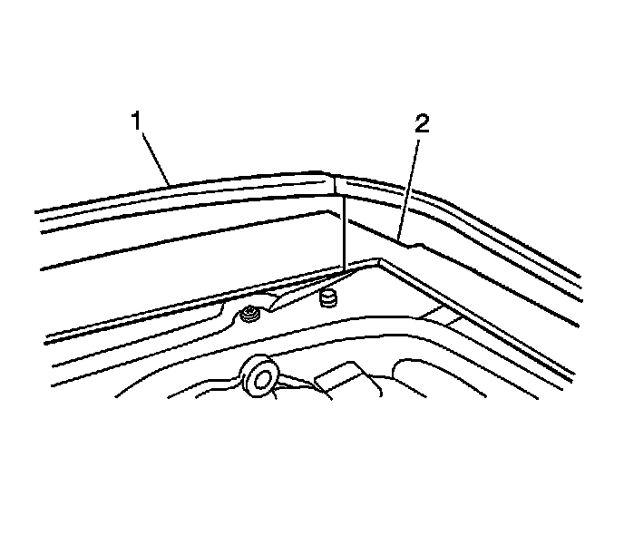
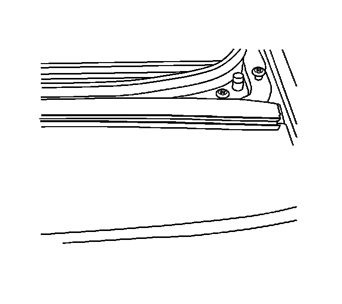

Sunroof Window Weatherstrip Replacement (Outboard Side)
Sunroof Window Weatherstrip Replacement (Outboard Side)
Removal Procedure

1. Remove the front center rear sunroof windows. Refer to Sunroof Window Replacement (Front) (Service and Repair)Sunroof Window Replacement (Rear Vent) (Service and Repair)Sunroof Window Replacement (Center) (Service and Repair)Sunroof Window Replacement (Rear Stationary) (Service and Repair) .
2. Remove the outboard side weatherstrip (1) from the roof exterior trim covers (2).
Installation Procedure

Important: Install the weatherstrip so that the rear end is even with the rear edge of the side exterior trim cover.
1. Press the new seal into position. Work the seal down the trim cover until fully installed.
2. Install the front center rear sunroof windows. Refer to Sunroof Window Replacement (Front) (Service and Repair)Sunroof Window Replacement (Rear Vent) (Service and Repair)Sunroof Window Replacement (Center) (Service and Repair)Sunroof Window Replacement (Rear Stationary) (Service and Repair) .